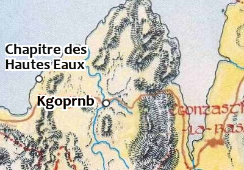

Le chapitre des Hautes Eaux
Le Gant de Saris est une organisation dévouée à la protection des pèlerins dans la région des Deux Lacs et composée principalement de paladins. Ces fidèles chevaliers, de fois diverses mais où les fidèles de Torm sont surreprésentés, éradiquent certes quelques bandes de brigands, mais ils concentrent surtout leurs efforts à affronter les créatures maléfiques qui s'aventurent sur leurs terres. Leur devise est « la Paix par la Force ».
L'ordre possède plusieurs chapitres de par le royaume des Deux Lacs. Le plus important est au fort du Reflet Béni, sur la route du Couchant. Celui de Laelith, situé dans les dépendances du temple du Poisson d'argent, n'est plus vraiment opérationnel et sert plus de retraite ou de lieu de réunion qu'autre chose. Les villes d'Olizeÿna et de Goracht possèdent également chacune un chapitre. Enfin, dans le comté du Nord de la province d'Egonzasthan se trouve le chapitre des Hautes Eaux. Le Gant de Saris n'est pratiquement pas représenté au-delà de frontières du royaume des Deux Lacs.
Organisation du chapitre
Au sein de l'ordre, le responsable d'un chapitre a le grade de commandeur. Son rôle est principalement administratif et il reporte hiérarchiquement au haut commandeur de l'ordre à Laelith, Franz Heilden. En ce qui concerne le chapitre des Hautes Eaux, c'est le paladin Tomas Verdebet qui occupe ce poste. Tomas est un humain de 54 ans originaire de Laelith qui a fait ses preuves au sein de l'ordre. Fidèle de Torm, il a rejoint les chevaliers du Gant de Saris il y a plus de 25 ans et est rapidement monté au sein de la hiérarchie de l'ordre. Fort de ses convictions, non seulement il n'hésite pas à continuer de prendre lui-même les armes de temps en temps, mais surtout il recrute activement de nouveaux membres. Meneur d'hommes au fort charisme, il peut se vanter d'avoir effectué plusieurs voyages dans les abysses et aux enfers. Et si la plupart ne furent que des missions de reconnaissances destinées à connaitre la géographie des lieux, Tomas a également mené des assauts contre plusieurs démons et diables sur leur propre plan. Le commandeur est d'ailleurs considéré comme l'un des plus grands experts des plans dans la région.
Edainwa Benyth
Le commandeur d'un chapitre est assisté par trois lieutenants, chacun d'eux étant de fonction durant 12 heures. Donc, quotidiennement, un lieutenant est responsable de jour, un autre de nuit, et le dernier a quartier libre. Ces gradés sont des opérationnels qui prennent part à toutes les opérations importantes. Un des trois lieutenants du chapitre des Hautes Eaux est une femme, Edainwa Benyth. Jeune et jolie, mais taciturne, parfois ailleurs, elle est respectée pour son talent de traqueuse. Il y a trois ans, en effet, lors d'un combat contre un diable légionnaire, elle a été gravement blessée. Depuis elle semble « sentir » la présence de créatures maléfiques. Ce lien étrange intrigue les chevaliers, mais ils ont toute confiance en elle. Ce qu'ils ignorent, toutefois, c'est le mal qui la ronge. Autour de sa blessure, sa peau est comme nécrosée, mais ne meurt pas. Un liquide noire suinte de temps en temps de la plaie qui parait encore ouverte, tout en prenant la forme effrayante d'une bouche. Edainwa a caché ce mal à tous les membres du Gant, à l'exception de son commandeur. Ce dernier est le seul autorisé à pénétrer dans la cellule de la traqueuse lorsque, parfois, elle est prise de violents cauchemars au milieu de la nuit. C'est aussi à Tomas qu'elle a confié que certaines images de ses rêves devenaient réalité.
Trevor Vaun
32 chevaliers, qui sont le socle de l'ordre, sont rattachés à ce chapitre. Cela ne veut pas dire qu'ils y logent, mais que c'est ici qu'ils viennent prendre leurs ordres. Par définition, le chapitre accueille tout membre de l'ordre qui passe dans la région. Tous portent une écharpe bleu clair ornée de l'emblème de l'ordre. Ce sont des combattants d'élites dévoués corps et âmes à l'ordre et qui respectent la hiérarchie, mais ils sont également capables d'actions d'éclats individuelles remarquables. La grande majorité d'entre eux sont des paladins, mais certains avant de rejoindre l'ordre étaient clercs ou guerriers. C'est le cas de Trevor Vaun, un des chevaliers de ce chapitre. Clerc de Torm au gabarit impressionnant (105 kilos pour 1,94 mètre), Trevor est du coin et a toujours compté plus sur sa masse d'armes que sur la bonne parole ou les sorts de son dieu pour convaincre le mal de laisser en paix ses prochains. Il a rejoint l'ordre il y a juste trois ans, après s'être fait remarquer lors d'une bataille par un chevalier du Gant de Saris, lequel est mort lors d'une mission depuis. Trevor est depuis devenu un vrai paladin qui s'entraîne quotidiennement pour parfaire ses techniques martiales. À 32 ans, ce grand moustachu est prêt à donner sa vie pour la cause, mais jusque là personne n'a été en mesure de la lui prendre.
Les chevaliers sont aidés pour les tâches quotidiennes par des frères écuyers, un ou deux par chevalier, en plus des gardes du bâtiment et du personnel. Mais bien qu'ayant un rôle fondamental dans l'organisation, les frères écuyers ne sont pas considérés comme des membres de l'ordre du Gant de Saris.
Recrutement
Dans toute la région de Laelith, l'ordre compte pour l'instant un tout petit peu plus de 150 chevaliers, intronisés ou à l'épreuve pour leur première année. Et chaque année l'ordre déplore la perte d'environ 5% de ses effectifs, par retrait volontaire ou beaucoup plus communément pour cause de décès au combat. Un recrutement actif est donc nécessaire pour maintenir les effectifs stables, et une forte campagne de recrutement vient d'être lancée.
La moitié des nouvelles recrues sont généralement de simples individus qui, par souhait personnel, ont rejoint le chapitre le plus proche pour y faire acte de candidature. Si celle-ci est acceptée, ils commencent alors par devenir écuyers et travaillent aux côtés des chevaliers. Un faible nombre provient également des populations sauvées par les membres de l'ordre, et qui ressentent ensuite une dette envers l'organisation. La plupart de ces individus sont généralement inexpérimentés, et commencent eux aussi comme écuyers. Le reste des recrues sont des hommes ou des femmes que les chevaliers du Gant de Saris ont rencontrés durant leurs voyages et qu'ils ont convaincu de rejoindre l'organisation. Ceux-là sont généralement des aventuriers expérimentés qui aspirent directement au rang de chevalier. Dans tous les cas, pour obtenir officiellement le grade de chevalier au sein de l'ordre, il faut avoir fait ses preuves à ce poste durant un an (et être paladin de niveau 2 minimum).
Avant la cérémonie de l'adoubement, le candidat doit passer une nuit complète de jeûne à prier et prêter serment le lendemain matin devant les membres de l'ordre. Cela fera de lui, à partir de ce moment, un membre à part entière au rang de chevalier de l'ordre du Gant de Saris.
Bénéfices et devoirs
Mise à part une blague qui circule entre les membres disant que le premier bénéfice des membres de l'ordre est d'avoir l'honneur de périr face aux plus puissantes des créatures maléfiques du royaume, on peut plus sérieusement dire que le premier bénéfice est de faire partie d'une organisation fraternelle qui considèrent ses membres à vie (sauf bien sûr s'ils dénoncent l'ordre ou se conduisent de manière contraire aux préceptes de l'organisation). Les chevaliers du Gant de Saris trouveront un havre de paix dans chaque chapitre qu'ils rencontreront sur leur chemin, et autant les membres actifs que les anciens leur ouvriront les portes de leur foyer sans hésiter s'ils recherchent un endroit pour dormir.
Le comportement attendu d'un chevalier de cette organisation suit le code des paladins. De plus, les chevaliers doivent être célibataires, ne jamais dépouiller un cadavre, et doivent considérer la protection des pèlerins comme la première des priorités, quelles que soient les circonstances. Enfin, afin d'assurer le futur de l'organisation et permettre la construction des chapitres mais surtout des hospices, chaque membre doit reverser à l'ordre 10% du montant des trésors qu'il trouve.
Le chapitre des Hautes Eaux
Plan du chapitre des Hautes Eaux
Le chapitre des Hautes Eaux, situé sur la rive sud du lac, à l'ouest de Kgoprnb, est le dernier chapitre à avoir été construit il y a de cela plus d'un siècle. Les murs extérieurs sont en grès et le sol de l'édifice est recouvert de plaques de marbres blancs et de pierres sacrées d'Egonzasthan. Un petit luxe en comparaison des bâtiments de l'organisation sœur de la Main de Saris. De grandes herses protègent les deux entrés du bâtiment mais, sauf en cas de danger identifié et imminent, celle de l'entrée principale au sud est levée durant la journée, bien que surveillée en permanence par les gardes.
1. Hall. Le hall sert de salle de cérémonie impromptue pour accueillir un visiteur important, ou de salle d'attente pour les personnes ne faisant pas partie de l'ordre qui viennent faire des affaires. Quatre hommes d'armes sont chargés de protéger en permanence cette entrée. Elle est très bien éclairée par un énorme chandelier et ses murs sont décorés de nombreux symboles et images, dont une version stylisée de la défunte déesse Saris. Plusieurs canapés assurent le confort des invités durant leur attente.
2. Antichambre. Quatre autres hommes d'armes surveillent ou accompagnent les visiteurs qui se rendent à la chapelle.
DES VISITEURS DE MARQUE
Il n'est pas rare que le haut commandeur de l'ordre, Franz Heilden, malgré son âge, vienne assister aux réunions qui se tiennent dans les chapitres. La présence du grand prêtre Valerian, le grand maître de l'ordre, est par contre exceptionnelle.
3. Chapelle / Auditorium. Cette immense pièce sert à la fois de salle de réunion pour les membres et de chapelle. Dans le premier cas, elle est le plus souvent utilisée pour mettre au point les stratégies ou planifier les offensives contre des créatures maléfiques, sur le plan matériel ou sur des plans extérieurs. Tout chevalier qui se trouve au chapitre lorsqu'une réunion a lieu est invité à y participer, bien que son assistance ne soit pas obligatoire si le danger n'est pas imminent ou proche. Le symbole de l'ordre, un gantelet de métal, a été gravé sur les murs, et deux grandes statues représentant le courage et le sacrifice de soi, le bras levé tenant une épée longue et un bouclier sur la première, et une épée à deux mains sur la deuxième, sont dressées de chaque côté de l'estrade, au nord de la pièce. Les membres sont autorisés à y vénérer toute divinité loyal bonne.
4. Entrepôt. Ici sont entreposés les objets communs utilisés au chapitre. Matériels de nettoyage, chandelles, drapeaux, pièces d'armures, armes non magiques, et autres, y sont rangés avec soin afin de pouvoir être facilement retrouvés.
5. Quartiers privés. Chacune de ses chambres spartiates contient un lit et un coffre pour les affaires personnelles, mais bien peu en matière de décoration. Toute personne ayant au moins le grade de lieutenant dans l'ordre peut en occuper une gracieusement sur simple demande, si elles ne sont pas déjà occupées à son arrivée bien entendu. Des notables ayant prouvé leur loyauté à l'organisation ou des chevaliers ayant accompli un exploit peuvent aussi être invités à s'y reposer. Dans de rares occasions il peut être demandé à un gradé de délaisser sa chambre pour un hôte royal ou pour une personne haut placée d'une église supportant l'ordre. Le commandeur du chapitre et ses trois lieutenants résident dans ces chambres.
6. Quartiers communs. Les lits superposés sont les premières fournitures de chacune de ces deux grandes pièces. Tout chevalier qui se trouve au chapitre pour la nuit dormira dans une de ces deux pièces. La politique de l'ordre spécifie qu'il ne sera rien demandé aux chevaliers ni aux frères écuyers pour l'usage de ces pièces, et ce quelle que soit la durée de leur séjour.
7. Bains. Si l'on sait ô combien les membres de l'organisation se soignent, ce n'est pas une surprise de voir que cette pièce parait fort usitée. Trois baignoires occupent le centre de la pièce, et un grand poêle utilisé pour l'eau chaude est appuyé contre le mur ouest. Les serviteurs s'affairent souvent par ici.
8. Chambre des préparations. Les prêtres de l'ordre utilisent cette salle pour préparer les cérémonies, relire leurs notes et préparer les objets sacrés qui seront utilisés lors des célébrations. Occasionnellement, la pièce sert aussi de salle de méditation pour la préparation des sorts divins. La chambre est ouverte à tout membre souhaitant l'utiliser, si aucun événement spécifique n'y est planifié, bien entendu.
9. Quartier des gardes. Les huit gardes qui travaillent à la sécurité et à la protection du chapitre sont logés dans cette pièce. On y trouve quatre lits superposés et deux armoires pour leurs effets personnels. Ils sont payés deux pièces d'or par semaine et ne participent que très rarement aux missions.
10. Quartier des serviteurs. La dizaine de serviteurs qui officie ici le fait par choix personnel. Ils ne sont pas payés, mais logés et nourris gratuitement. La plupart sont des personnes âgées qui n'ont pas de famille à charge. Les membres de l'ordre les traitent avec respect.
11. Cuisine. La nourriture du chapitre est préparée dans cette salle par les serviteurs et servie à la salle à manger (12). Trois poêles trônent au centre de la pièce et tout le mur est sert de garde-manger. La nourriture est de très bonne qualité. On sert aux chevaliers de la viande rôtie de tous types, ainsi que des fruits et des légumes frais, suivant la saison, des tourtes à la viande, et du pain. La nourriture est disponible à toutes heures du jour et de la nuit, mais entre le coucher du soleil et l'aube il faut aviser les serviteurs environ une heure à l'avance pour leur donner le temps de préparer un repas.
12. Salle à manger. Trois repas par jour sont servis dans cette salle, et tous ceux qui sont hébergés au chapitre ou de visite sont invités à les partager. La pièce est meublée de longues tables entourées de chaises recouvertes de cuir noir. Sur une estrade se trouvent des instruments de musique pour ceux qui veulent distraire les hommes. On y chante et on y raconte aussi ses dernières aventures aux autres chevaliers.
13. Bibliothèque. Les chevaliers viennent avant tout dans cette pièce pour se reposer et se relaxer. Tous les chapitres de l'ordre possèdent une salle de ce type, mais la bibliothèque du chapitre des Hautes Eaux est particulièrement renommée pour sa collection unique d'ouvrages à couverture de cuir sur les diables et les démons : leurs forces, leurs faiblesses, leurs tactiques et bien d'autres informations y sont détaillées. Lorsque l'ordre planifie une expédition contre ce type de créatures, des chevaliers de tout le royaume viennent auparavant ici étudier ceux qu'ils vont affronter, afin de se préparer de manière adéquate. On trouve également dans cette bibliothèque de nombreux ouvrages sur la cosmologie des plans.
14. Forge. Cette zone est utilisée pour la fabrication des armes et des armures. Le travail du métal est effectué par les chevaliers en personne car il est rarement confié à des forgerons ne faisant pas partie de l'organisation. Lorsque le chevalier souhaite enchanter l'arme qu'il est en train de forger, il fait appel à un prêtre ou à un magicien qui collabore régulièrement avec l'ordre.
15. Écuries. Les montures des chevaliers sont logées ici. Elles sont généralement amenées par la porte est puis passent par la cour pour finir aux écuries. Il y a de la place pour une douzaine de chevaux. Les autres restent dans la cour ou sont abrités dans la forge.
16. Cour. Des chênes et des fleurs jaillissent d'un parterre d'herbe grasse dans le jardin intérieur du chapitre. Les chevaliers et les visiteurs peuvent s'y promener en toute tranquillité à l'air libre.
17. Murs extérieurs. Chacun des murs extérieurs large de 3 mètres consiste en un couloir de 1,50 mètre de large bordé d'un mur de grès de chaque côté. Ceux-ci permettent de circuler entre les salles du chapitre sans s'exposer à un danger de l'extérieur. Les murs font 3 mètres de haut, et des marches creusées dans le mur à l'intérieur de la cour permettent d'accéder aux toits, sur lesquels les défenseurs peuvent donc monter.
Par blueace